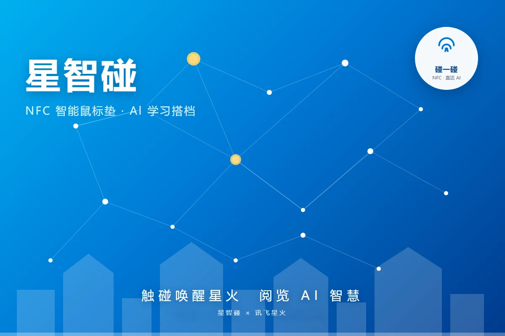
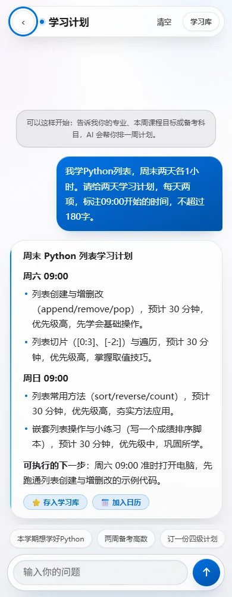
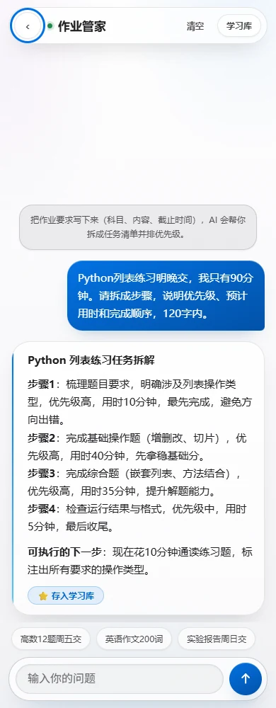
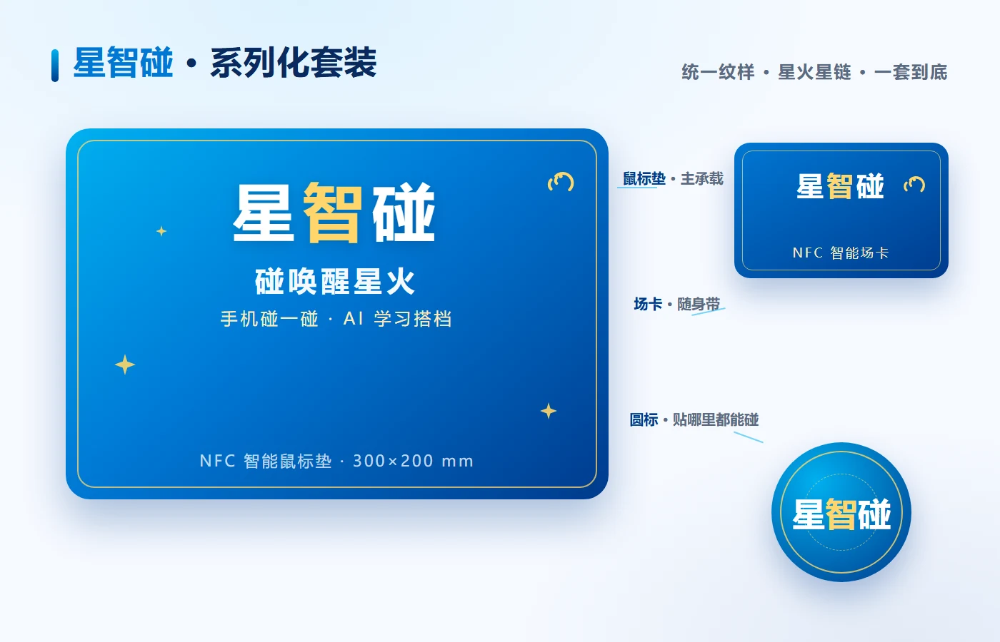
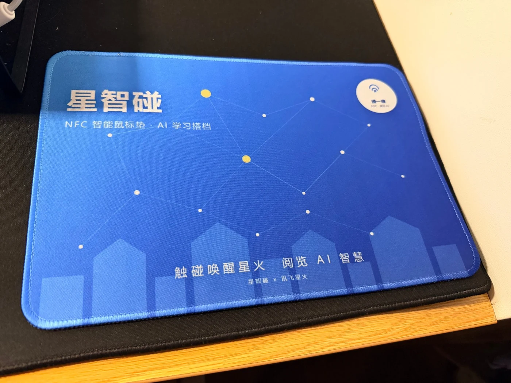

手机靠近
触碰桌面右上角的 NFC 圆标。

移动光标，靠近右上角触碰区
桌面就是入口
鼠标垫原本就在手边。我们只增加一个清楚的触碰点，让入口不再藏在层层应用里。
点击圆标，看页面被唤醒
不是让 AI 更远
星智碰减少的是寻找入口的步骤；输入、网络和模型等待仍然存在。清楚的边界，比夸大的承诺更可信。
触碰桌面右上角的 NFC 圆标。
系统读取标准 NDEF 网页地址。
无需额外安装，直接进入 H5。
计划、作业或问答，各自有清楚入口。
一处入口，三种学习状态
01 / 03
说清专业、课程目标或考试日期，生成一周安排与每日任务；需要时还能导出日历。



一个入口，也是一套识别系统
星链纹样指向信息连接，星火黄标出触碰节点。用户不必重新学习新的符号：看到圆标，就知道可以碰。
真实链路，清楚边界
保存标准网页地址
免安装进入三类场景
转发请求并处理响应
生成计划、拆解与讲解
学习档案默认主要保存在当前浏览器。提问与相关对话会发送给代理服务和模型；“附带学习背景”默认关闭，由用户主动决定。

从屏幕走到桌面
现有样品已经把品牌纹样、右上角 NFC 触碰点和桌面使用关系放进同一个实体。官网展示的是当前样品版本，不把尚未完成的量产验证写成既成事实。
星智碰 · AI 学习搭档